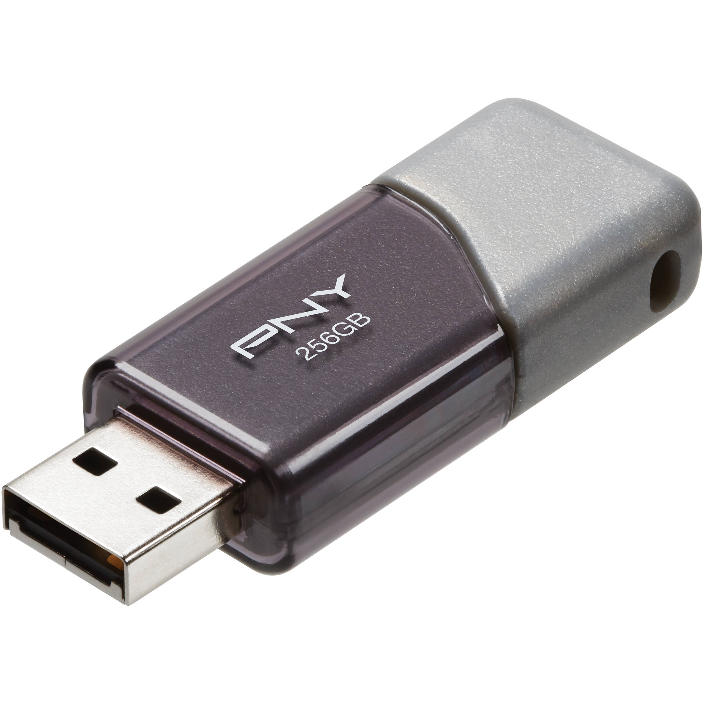

Persistent Storage
Persistent Storage is any data storage device that retains data after power to that device is shut off.
It is non-volatile storage.
Types of Persistent Storage
- Hard Disk Storage
- Magnetic
- Stores OS, application, data

- USB Memory
- Universal Serial Bus
- Stores data
- Memory Card
- Similar to USb
- Cameras, phone...etc
- Floppy Desk